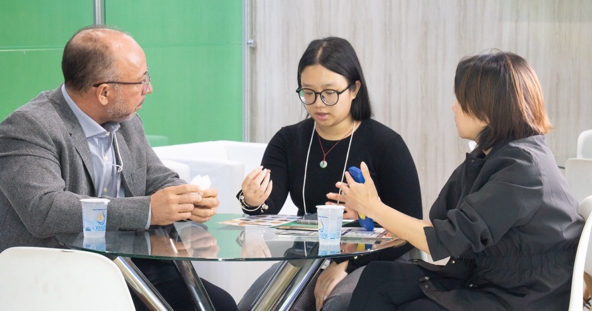
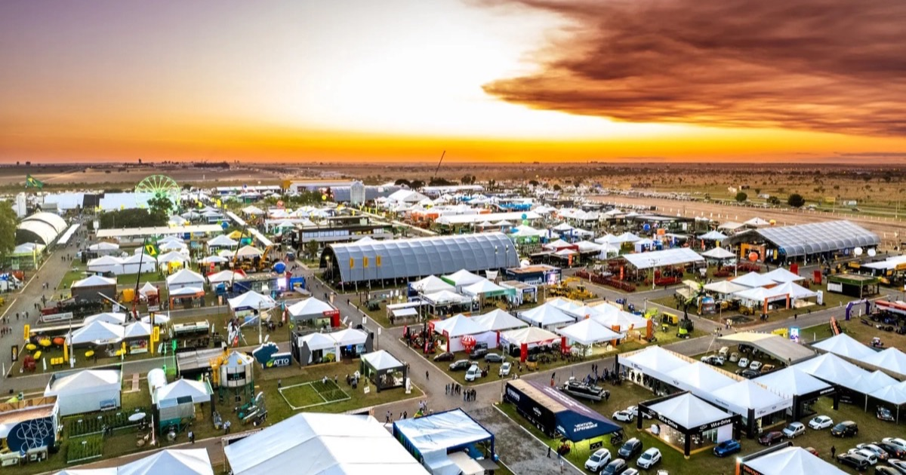
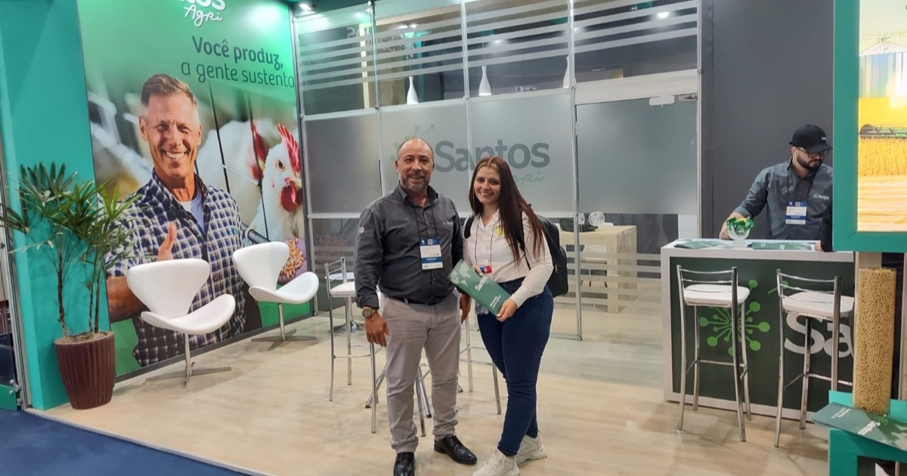

4 a 6 de agosto de 2026
Evento internacional · Nossa presença
SIAVS 2026: Santos Agri fecha novas parcerias internacionais na maior feira do setor
Na segunda edição consecutiva na SIAVS, a Santos Agri ampliou sua rede de compradores internacionais na América Latina, Ásia e Oriente Médio.
Ler matéria
8 a 13 de junho de 2026
Evento · Nossa presença
Bahia Farm Show 2026: Santos Agri marca presença pelo quinto ano consecutivo
Desde 2022 no maior evento de agronegócio do Oeste da Bahia, a Santos Agri reforça um vínculo que já dura cinco edições seguidas.
Ler matéria
2024
Evento internacional · Nossa presença
SIAVS 2024: os primeiros passos da Santos Agri no maior evento do setor
Na estreia na SIAVS, a Santos Agri iniciou conversas que, dois anos depois, se transformaram em parcerias reais.
Ler matéria